从可运行的 IED 到可复现的通信现场：IEC61850 Service Studio 的工程设计与二次开发
在 IEC 61850 联调中，困难往往发生在“能连接”之后：模型可以展开，但数据集成员与报告解释对不上；遥控可以选择，却无法执行；现场出现过一次异常，回到实验室后没有对应 IED，更无法重现当时的数据变化。Service Studio 希望把这些工作放进一个可保存、可观察、可扩展的桌面工程环境。
本文以 2026 年 9 月 10 日的 Service Studio 0.2.2 源码和本机运行结果为依据，配套 Client Studio 0.1.0 用于真实 MMS 联调。内容结合源码审查、已有集成验证记录、重新运行的功能截图与官方产品资料。它介绍的是面向工程联调的 IED 服务工具；“生产用桌面工具”的产品目标，并不等于已取得 IEC 一致性认证或具备保护装置的实时性。
一、项目到底解决什么问题
把 IED 模型变成能够参与联调的服务
ICD 描述设备能力，CID 表达设备实例配置，SCD 可以包含多个设备和通信配置；单纯查看文件，不能验证客户端在真实 MMS 会话中的读取、报告订阅和控制行为。Service Studio 将模型导入、原生服务构建、运行值修改和现场诊断连接起来：选择模型，启动监听，使用独立客户端连接，然后以协议交互结果检验配置。
项目既支持从零建立简化工程，也支持导入 ICD、CID、SCD、IID 和 libiec61850 CFG。前者适合快速搭建小型试验，后者适合围绕实际工程模型联调。两种模式共享协议运行引擎，但没有强行共享所有编辑能力：导入模型保留完整结构，结构编辑受到限制，避免一个只理解少数 CDC 的表单破坏复杂模型。[1]
让配置、运行、报文能够相互核对
工程初值、正在运行的对象值、客户端观察到的值，是三个不同的事实。例如，将 AnIn1 的初值设为 220，再在线修改为 231.5：运行模型应发生变化，启用的报告可能产生通知，客户端重新读取应该看到新值，但保存的工程初值不应被悄悄改写。
Service Studio 保留这种区别。工程文件管理配置；C++ 引擎管理运行模型；独立报文窗口解释网络中的证据。由此，问题可以沿链路定位：没有监听、客户端未连接、报告未启用、对象没有更新，还是抓错网卡。它提供的是可检查的工作流程，而不是一个不断刷新的数值面板。
桌面交互是工程效率的一部分
主窗口提供原生菜单、快捷键、工具栏、模型树、表格、上下文菜单、属性面板、事件区与可恢复布局。停止服务后修改结构，运行时修改值；右键对象即可打开完整 DA 属性树。原先独立的“模型属性”功能页已去掉，属性查看回归对象上下文。
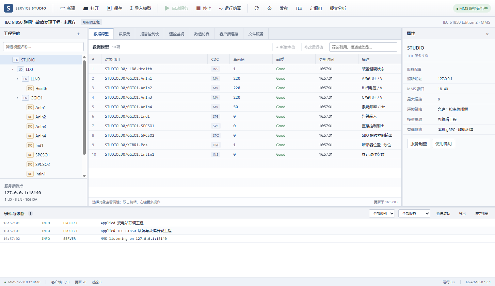
图 1：真实 Electron 内容区截图。文中截图由运行中的应用采集，未绘制模拟界面；系统边框和原生菜单弹出层不包含在 capturePage 内容区图像中。
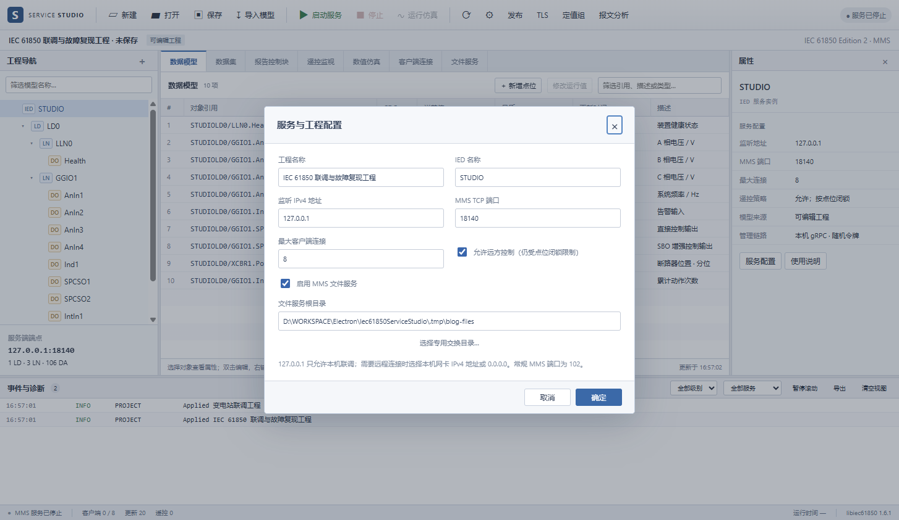
为什么采用桌面应用？工程现场需要本地模型、本地证书、网卡枚举、原生协议进程和离线文件分析。这些任务适合由桌面壳组织。Electron 提供跨前后端开发的便利，但它本身不会自动带来好的桌面体验；菜单、键盘操作、进程生命周期和列表性能仍需具体实现。
二、与现有 IEC 61850 客户端方案相比，优势在哪里
比较之前需要统一对象：Service Studio 的主要角色是 IED 服务与工程仿真，Client Studio 承担主动客户端；两者组合才能与包含客户端、模拟器和分析器的完整测试套件比较。将 Service Studio 单独与成熟客户端的全部功能列表对比，会得出错误结论。
以下信息来自供应商或项目官方页面，属于公开能力对照，不是横向实测，也不对未公开的价格和兼容性作推断。
| 方案 | 官方公开的核心能力与定位 | 本项目相对有价值的地方 | 选择时的限制 |
|---|---|---|---|
| OMICRON IEDScout | 多 IED 浏览、活动观察、被动流量分析及 IED 仿真；覆盖多版 IEC 61850 场景 | 可以在本地源码层定制工程对象、诊断和回放规则，组合自己的业务工作流 | 仿真与分析一体化并非本项目独有；不能据此宣称功能领先 IEDScout |
| Triangle MicroWorks 61850 Test Suite Pro | Advanced Client 提供模型浏览、读写、控制、报告、数据集、文件等；套件包含 IED Simulator 等工具 | 工程配置与业务代码一起版本化，便于对接内部 CI 和专用测试场景 | 厂商工具的成熟互操作经验不能由一组本机测试替代 |
| IEDExplorer | C# 开源客户端，支持 MMS、报告、文件、动态数据集和 GOOSE；项目也列有实验性服务端仿真 | 当前项目采用 C++ 协议栈与独立桌面进程分工，围绕服务工程及可选分析 DLL 组织扩展 | IEDExplorer 已有很多高级功能，不能把开源、可抓包作为排他优势 |
| Grid Software gooseAir | 综合 MMS 客户端/服务端、GOOSE/SV、SCL 编辑及仿真场景 | 能直接修改本项目的数据模型映射、持久化和安全策略 | 本项目当前每个引擎一个 IED，不应与厂商公布的多 IED 仿真规模混同 |
| libiec61850 SDK | C 语言 IEC 61850 协议库，提供客户端、服务端、GOOSE、SV 能力 | 本项目补齐桌面工程管理、运行观察、导入诊断、持久化与分析窗口 | SDK 是基础设施；协议正确性仍依赖库及集成方式 |
| Wireshark / TShark | 通用报文捕获、协议解析、过滤及离线分析 | 在解析结果之上增加 IEC 61850 引用关联、观察值状态与受控回放 | 本项目复用了其解析能力，不宜宣称自研替代整个 Wireshark |
官方依据：IEDScout[2]、Test Suite Pro[3]、IEDExplorer[4]、gooseAir[5]、libiec61850[6]、TShark[7]。旧名称 Hammer、Anvil 在 TMW 官方 FAQ 中对应 Advanced Client、IED Simulator，比较时应使用当前产品体系。[8]
本项目更准确的优势是工程控制权与可组合性。一方面，桌面层、协议引擎、报文分析模块之间有明确接口；另一方面，完整源码允许把企业自己的对象命名、测试流程、审计格式和模型规则加入工具。在项目需要长期定制、离线部署或自动化验证时，这比一个孤立的新增按钮更有价值。
这种优势是基于架构和源码可修改性作出的判断，不是对竞品性能的实测结论。商业产品也可能提供 SDK、脚本和定制服务；例如 Grid Software 的 TERA/ETAR 方案本身就使用分离进程与接口集成，进程隔离也不是本项目首创。[9]
三、完整系统架构：三条通信平面、两个桌面角色
图 3 可单独打开缩放。箭头区分桌面管理、MMS 业务通信和可选报文处理；源文件见同目录的 Mermaid 文件。
管理平面：Electron 驱动本地原生引擎
Service Studio 使用 Electron 39、JavaScript、C++17、gRPC/Protobuf 和 libiec61850 1.6.1。渲染进程只负责交互，通过受限 preload 调用主进程；主进程启动自己拥有的 C++ 子进程，再通过 gRPC 管理引擎。
服务端管理接口监听 127.0.0.1:0，由系统分配随机端口，并要求每次启动生成的随机令牌。这个端口与 IED 的 MMS 监听端口完全不同：前者供桌面内部管理，后者才供客户端访问。当前服务管理 proto 包含 Apply、Start、Stop、Update、Simulation、Snapshot、GetModel、Interfaces、Settings、ChangeSetting 共十个一元 RPC。[10]
主窗口每 500 ms 获取运行 Snapshot；模型结构通过 GetModel 单独读取。因此本文不把它描述为全链路实时流式推送。配套 Client Studio 已有 StreamWorkspace 等接口，但其本地管理服务仍使用固定 48650 端口，两边的管理安全设计尚未完全统一。
Electron 的 context isolation、sandbox 和 IPC 边界是基础防线。官方安全指南也强调这些机制；本项目还要在主进程中校验具体命令和来源，而不是把任意文件系统、进程执行能力直接交给页面。[11]
业务平面：客户端访问真正的 IED 服务
C++ 引擎通过 libiec61850 提供 MMS 读写、数据集、报告、控制和文件服务。Client Studio 作为独立进程连接 MMS，不读取 Service Studio 的 JavaScript 内存。这样，截图中的客户端读值与服务端状态来自真实协议链路。
GOOSE 和 SV 使用二层以太网发布，不经过 MMS 的 TCP 连接。它们与模型共享数据来源，但有独立发布线程、接口选择和时序约束。把这两类路径在架构图中分开，能避免更换 MMS 端口就能改变 GOOSE 网卡这类错误理解。
分析平面：缺失也不影响主应用
报文分析是独立窗口，调用独立 helper 进程；helper 通过 C ABI 使用 iec61850-capture.dll，再组织 TShark、dumpcap 和临时索引。Electron 主进程不直接加载分析 DLL，主服务后端也不依赖它启动。
这种设计同时解决部署可选性和故障隔离：未安装模块时，主应用的模型、MMS、仿真等功能保持可用；分析进程超时或崩溃由桥接层报告，不应拖垮 IED 引擎。DLL 并不是完整 UI 插件，窗口和桥接仍属于桌面代码；独立主要体现在进程、原生接口与依赖边界。
单文件拆分为什么要沿职责进行
| 位置 | 当前职责 | 二次开发时应避免的混用 |
|---|---|---|
backend/src/main.cpp |
启动、管理服务注册、退出生命周期 | 不在这里继续堆叠模型、控制、文件和发布业务 |
server_engine.*、engine_operations.cpp |
引擎状态、业务操作与协调 | 不让 UI 的临时选择状态进入协议模型 |
model_builder.cpp、model_browser.cpp |
构建原生对象、输出完整模型 | 不用表格能显示的字段集合代替实际 DA 树 |
project_validation.cpp |
配置约束与错误诊断 | 不把错误留到监听已经开始后才发现 |
control_handlers.cpp |
选择、执行、策略与审计 | 不把普通数值改写等同于遥控事务 |
setting_store.*、tls_context.* |
定值持久化与 TLS 资源 | 不混进波形更新循环 |
publisher_service.*、publisher_model.cpp |
发布线程、编码及模型采样 | 不在持有模型锁时等待网卡发送 |
src/main |
文件、导入、IPC、后端及工程生命周期 | 不开放任意 renderer RPC 透传 |
src/renderer/views 等模块 |
树表、属性、窗口交互 | 不为每次选择重建全部模型 DOM |
src/capture、backend/capture |
分析窗口与独立原生实现 | 不让可选工具变成 MMS 的必装依赖 |
拆文件的收益来自状态所有权清楚、故障范围可控和验证入口稳定。前端目前仍有承担编排职责的 renderer 主文件，后续可以继续拆分页面控制器；不能仅凭增加文件数量就宣称架构治理完成。[12]
四、从模型文件到运行数据：完整数据链路
导入不是 XML 转 JSON
SCL 输入先检查 XML 大小和危险实体，再列出 IED / AccessPoint；多候选时让用户选择，单候选直接导入。之后调用随应用分发的官方 genconfig.jar，将文件转换为 libiec61850 CFG，最后由独立原生进程验证 CFG。直接加载 CFG 可以跳过 Java 转换。
目前 SCL/CFG 输入限制为 8 MB；XML 禁止 DOCTYPE/ENTITY，转换进程有超时，CFG 还有行长与嵌套等预检查。这些限制旨在让错误可诊断、失败可恢复；它们不构成对任意厂商 SCL 的兼容保证。
工程保存时内嵌转换结果和来源信息，因此重新打开工程不依赖原文件所在路径，也无需再次运行 Java。代价是导入后的结构目前只读，不能把它当成完整 SCL 编辑器或往返无损导出器。
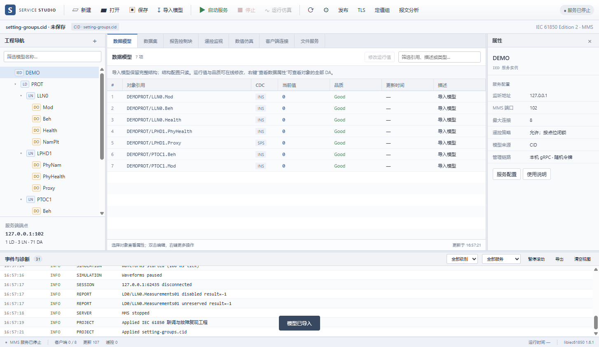
完整 DA 树与可编辑点位是两个视图
模型浏览保留 LD、LN、DO、DA、数组及 FC 等信息；在线简化点位编辑只针对已识别的 value/q/t 结构和 MV、SPS、INS、SPC、DPC 等类型。其他属性能被保留和读取，不代表都已经拥有正确的编辑器、控制器或单位换算。
右键“查看数据属性”弹窗展示对象的完整属性树、类型、FC 与值。它解决了原来把点位概要误当作全部模型属性的问题，也减少一个长期占用主区域的功能页。
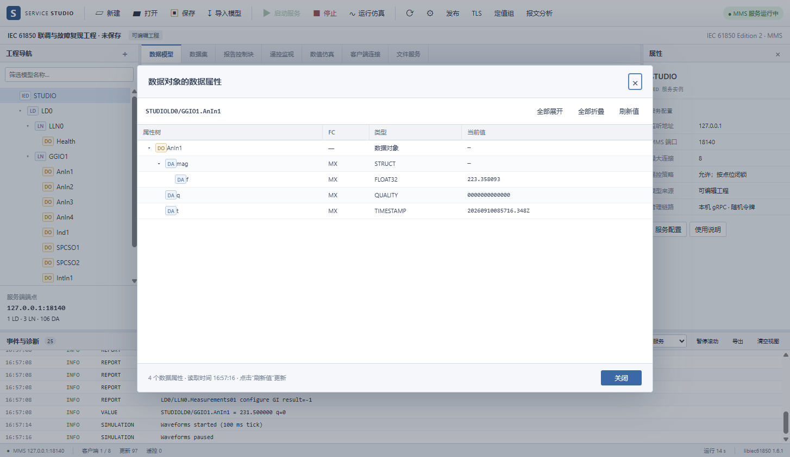
报告取决于客户端配置，而不是 UI 标签
数据集定义成员，报告控制块定义通知条件与行为，客户端负责保留、启用并触发 GI。URCB/BRCB 的配置、触发选项、完整性周期、缓冲时间和版本参数都需要与运行状态分开看。
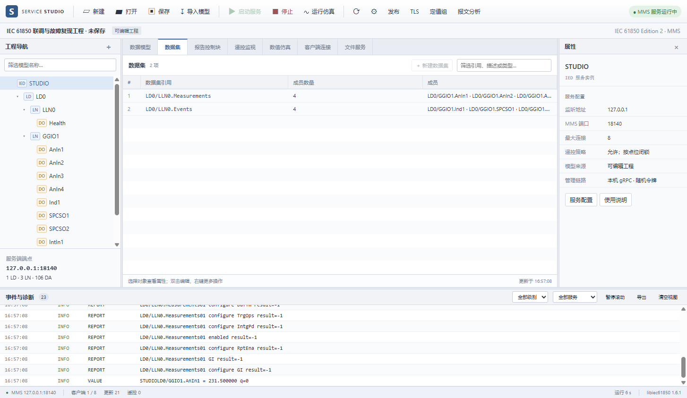
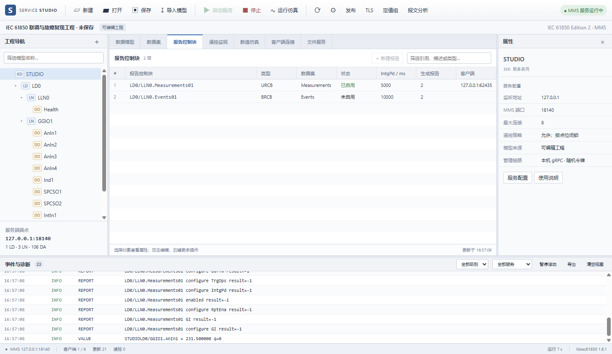
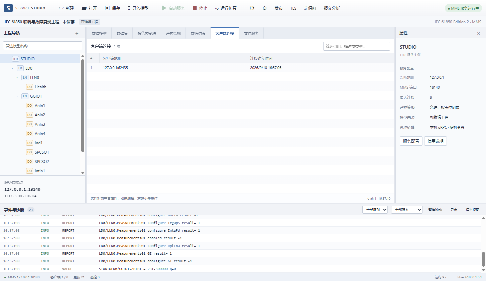
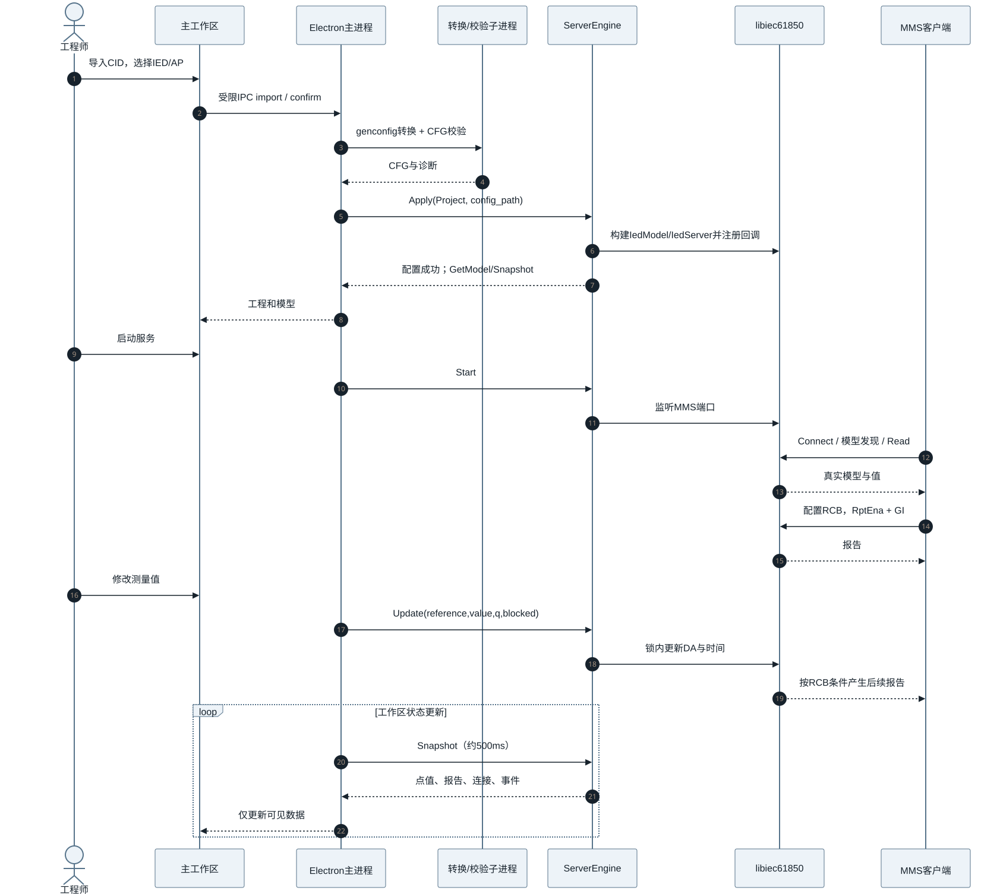
图 10 表示一条正常交互路径，不意味着每次 Update 都必然产生报告。触发选项、数据集成员、品质变化、缓冲和启用状态共同决定结果。BRCB 已实现支持，也仍需要更系统的断线重连、溢出与高负载测试矩阵。
五、各功能如何落到协议和工程行为
遥控：事务语义不能被一个布尔赋值替代
当前实现直接普通、SBO 普通、直接增强、SBO 增强四类控制模型，配套全局拒绝、点位闭锁和选择/执行审计。SPC、DPC 控制逻辑面向布尔控制；DPC 状态采用分位、合位等枚举表示，不能简单把显示数字直接当执行参数。
选择阶段、执行阶段、拒绝原因和事件记录分开处理，才能解释选中了却没有动作。当前测试控制请求被拒绝；扩展其他 CDC 时还需要明确操作参数和状态更新规则。已有集成脚本覆盖四种控制模型，但截图仅展示监视界面，不代替所有报文分支验证。
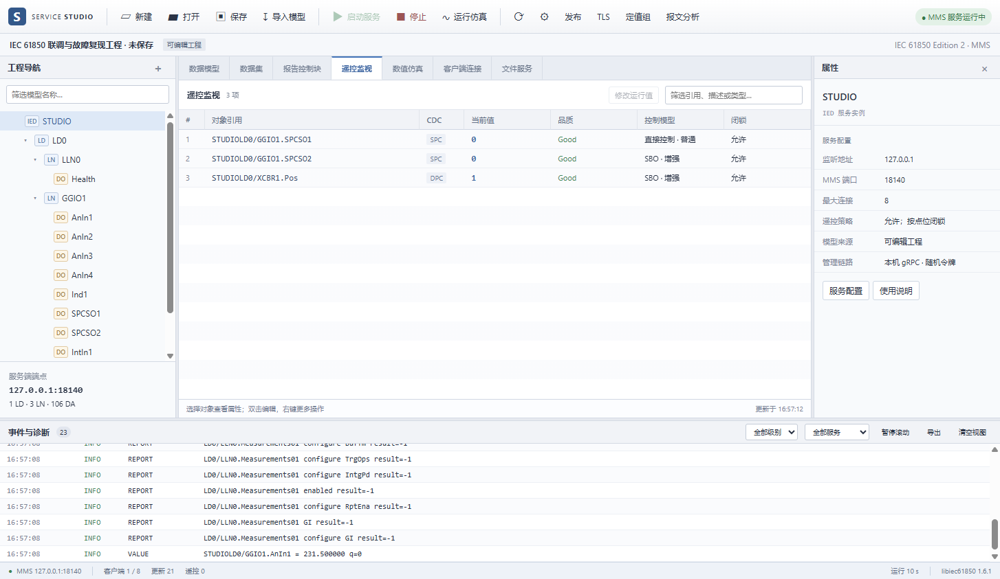
数值仿真：给报告和上位机一个可控变化源
恒定、正弦、斜坡、方波以 100 ms 周期驱动测量值变化，小型趋势图和事件计数方便观察。控制输出不自动跟随波形，避免演示数据覆盖遥控结果。在线改值与仿真都修改运行模型，不反向污染工程初值。
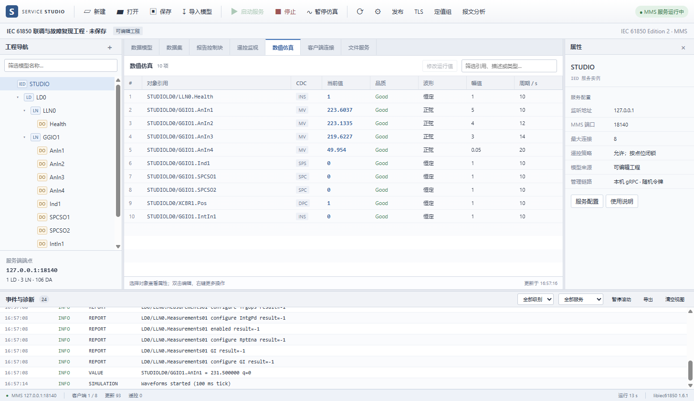
这适合验证上位机趋势、数据变化报告与告警输入，但不是电力系统暂态仿真器。后续接入物理模型时，应把模型计算、采样时钟和协议发布时间分别建模。
文件服务：显式开放一个专用目录
文件服务默认关闭，启用时指定目录；UI 可查看该目录内容。将应用文件系统访问与 MMS 对外文件目录分开，可以减少误配置。截图中的 commissioning.txt 是为本文联调创建的文件，并非虚构列表。
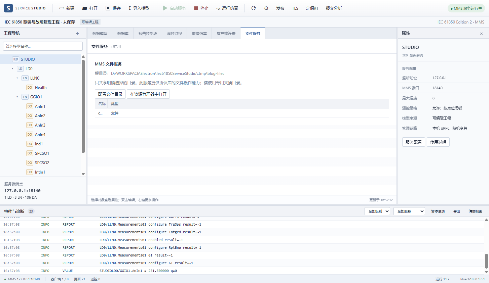
当前没有配置 MMS 日志存储，不能因为支持文件服务就宣称覆盖全部日志检索服务。配套客户端能调用的 RPC，也不代表服务端已经提供相应数据源。
TLS：凭据有效后才能启用安全监听
TLS 使用 mbedTLS 3.6.7，支持 TLS 1.2/1.3、客户端 CA 验证、可选 CRL 与客户端证书限定。证书和私钥必须匹配，加载失败会拒绝应用配置，不会自动退回明文。工程记录凭据位置，不内嵌私钥内容。
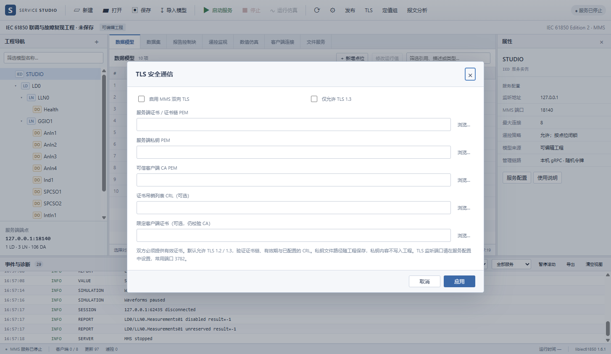
这解决传输加密和对端证书验证，尚不等于完整 IEC 62351 安全体系。角色授权、证书生命周期、长期审计和企业证书分发仍是后续工作；本文不将 TLS 功能表述为安全认证。
GOOSE / SV：共享模型，独立调度
发布器在锁内克隆所需模型值，释放模型锁后编码发送。这样，网卡发送和重传等待不会长时间阻塞 MMS 模型访问。
GOOSE 在数据变化时推进 stNum，并按 MinTime/MaxTime 调整重传间隔，使用 sqNum 区分同一状态的重传。SV 使用独立软件定时调度，支持每秒 1–4800 次，记录漏期，迟到时跳过已经错过的周期，避免累积成连续补发风暴。其 smpSynch 为 0，没有宣称 PTP 同步。
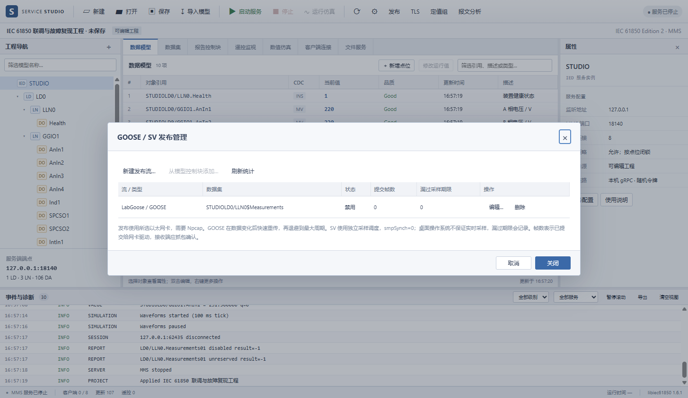
SV 当前采用通用数据集叶属性布局：BOOLEAN 1 字节；普通整数、枚举、FLOAT32、QUALITY 为 4 字节；INT64、FLOAT64、TIMESTAMP 为 8 字节。接收端必须使用相同布局，变更布局应更新 ConfRev。这里没有自动完成 9-2LE 电流/电压固定比例转换，也不是硬件同步的过程总线测试仪。已有发布集成验证与截图的配置状态应分别阅读。[13]
定值组：确认成功必须意味着能够恢复
一个定值组编辑事务通常包括 EditSG 预约、SE 写入、CnfEdit 确认，再按需要设置 ActSG。SE 暂存值和当前激活 SG 值不可混为一谈。
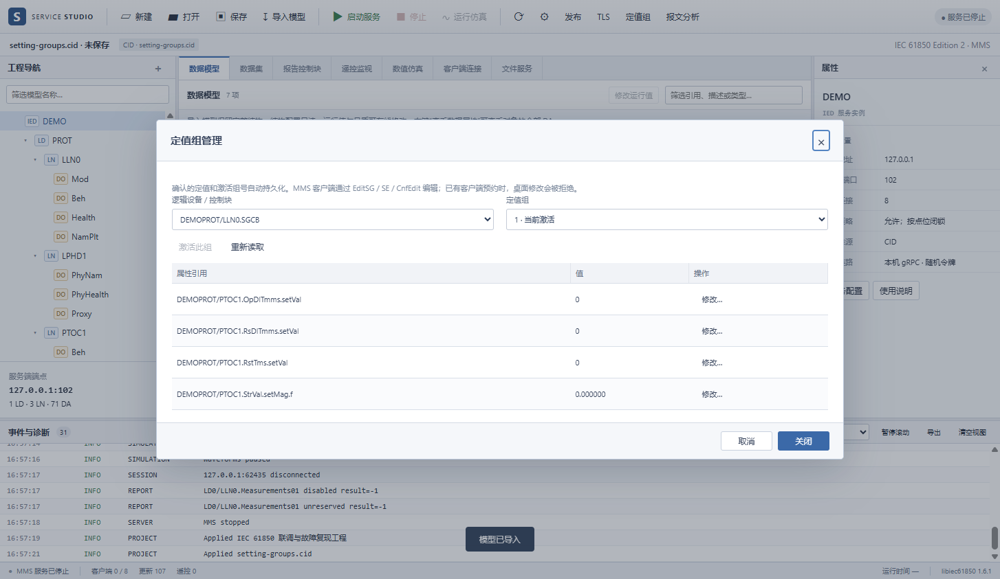
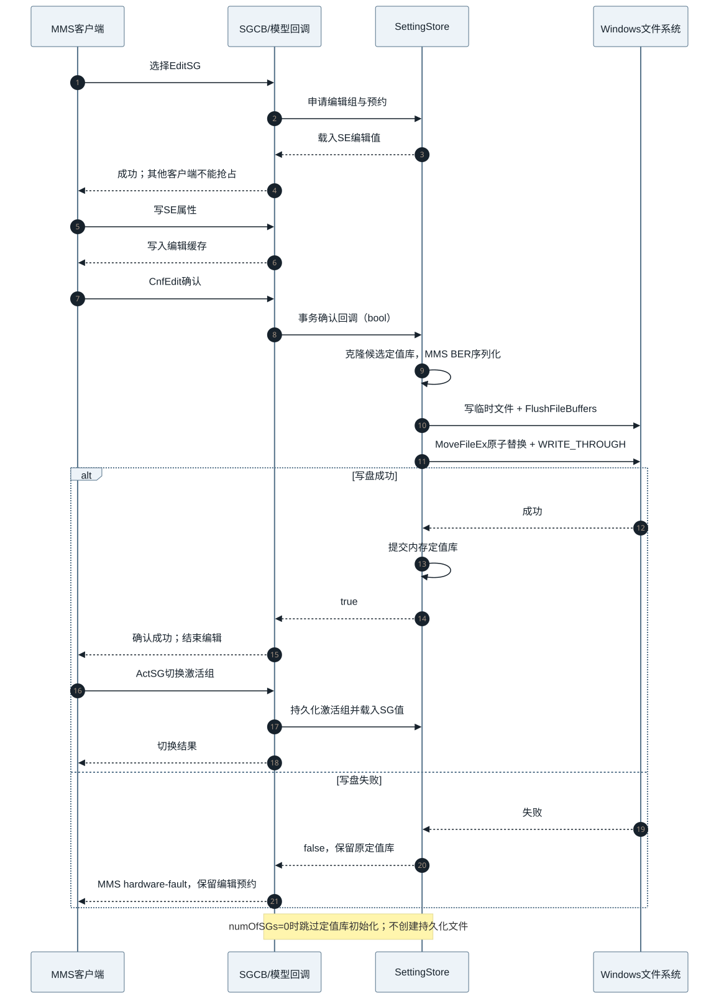
SettingStore 按引用和类型匹配 SG/SE，通过 BER 保存完整类型值，外层使用版本化持久化结构。Windows 上写临时文件、刷盘，再原子替换目标 banks 文件。确认阶段写盘失败，应拒绝确认并保留原值与预约，不能先返回成功，再在后台悄悄失败。
工程 UUID 标识稳定的 banks 存储；已有工程可使用结构摘要回退。工程文件与 banks 文件分开，因此迁移工程时应同时迁移对应定值文件。一个重要修复是：模型没有定值组、numOfSG 为零时，应该表示该能力缺失并跳过相关构建，而不是报激活组或组数无效。这属于模型可选性的正确处理。[14]
六、独立抓包分析：从字节走向可解释的观察值
为什么采用封装 DLL 加隔离 helper
分析 DLL 的 C ABI 版本为 0x00010000，提供 create、request、cancel、destroy 等入口。UTF-8 响应由所属上下文管理，调用者不跨 CRT 释放库内部内存；helper 负责把它转换为 JSONL 请求响应，并承接进程退出、超时和取消。
主窗口不需要知道 TShark 启动参数和索引文件结构。后续替换解析后端、增加分析命令时，只要保持 ABI/消息契约，就可以减少对 IED 引擎的影响。当前 DLL 仍依赖配套工具链；动态库封装不代表一个 DLL 就包含所有解析器和驱动。
抓取和显示过滤是不同阶段
实时捕获由 dumpcap 执行，停止时优先正常结束并刷新文件；随后离线解析。Npcap 用于 Windows 网卡捕获，本机 Client/Service 通信应选 Loopback，而不是随意选择没有报文的虚拟网卡。
TShark 的 -f 是捕获过滤，-Y 是显示过滤；离线 -r 可读取捕获文件，双遍分析需要可回读输入，不能直接等同于实时流。项目将抓取与分析阶段分开，有利于重组和取消控制。[7:1]
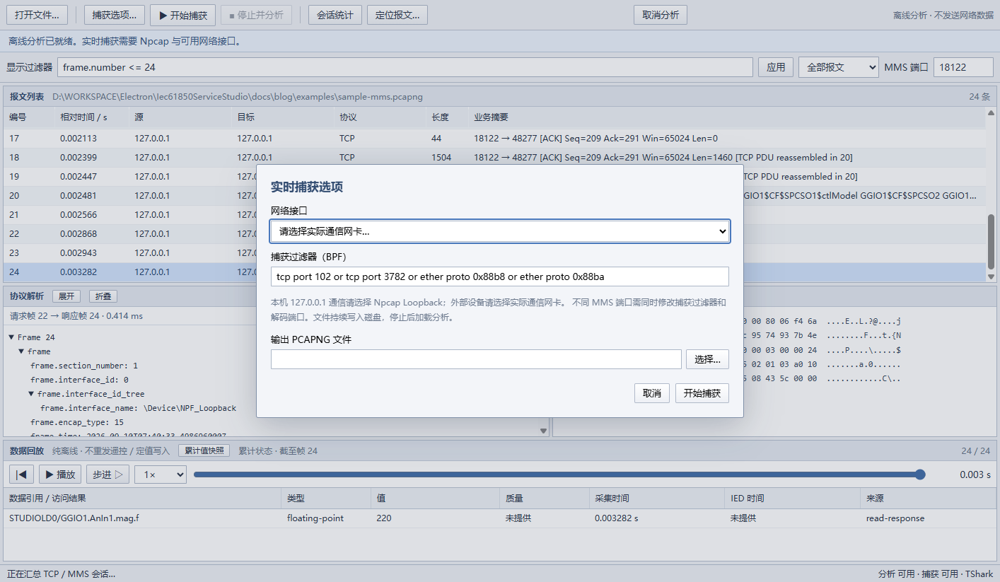
非标准端口也需要明确解码。本文附带 PCAPNG 来自本地集成测试，MMS 使用 18122；分析时设置该端口，不能仅凭文件扩展名期待所有 TCP 都自动识别成 MMS。
PCAPNG 打开没有效果必须先分清三类情况
第一类是合法但没有数据包的文件。此前用户提供的 capture.pcapng 经验证只有 528 字节、零数据包，包含接口等元信息；选择的虚拟接口没有捕获到目标通信。应该提示空捕获及网卡选择，而不是报模型或 MMS 解析错误。
第二类是文件有 TCP 数据，但缺少正确的端口解码或完整会话上下文。第三类才是格式损坏、解析失败或工具缺失。UI 的错误信息必须区分这些层次，否则用户会不断更换文件，却不知道下一步应检查什么。
这个 528 字节案例属于已有项目验证记录，不是本文附带的 sample-mms.pcapng。后者本次实际解析得到 155 帧和 10 个可回放完整观察值。[15]
解析 MMS 不能只看当前一帧
Read 请求携带变量引用，Read 响应可能只携带值。解析器使用 TCP 流、请求方端口和 invoke ID 关联请求响应，再把值映射回数据引用。报告还涉及 OptFlds、成员包含位、数据集目录和历史关联状态。
只有完整、可信的成功读取或报告观察值进入状态重建。Write 请求表达写入意图，即使看到了请求，也不能据此断言设备实际状态已经变成该值。无法解析的引用要保留未知状态，不能按位置猜出一个对象名。当前分段报告会提示限制，尚未完整合并重建。
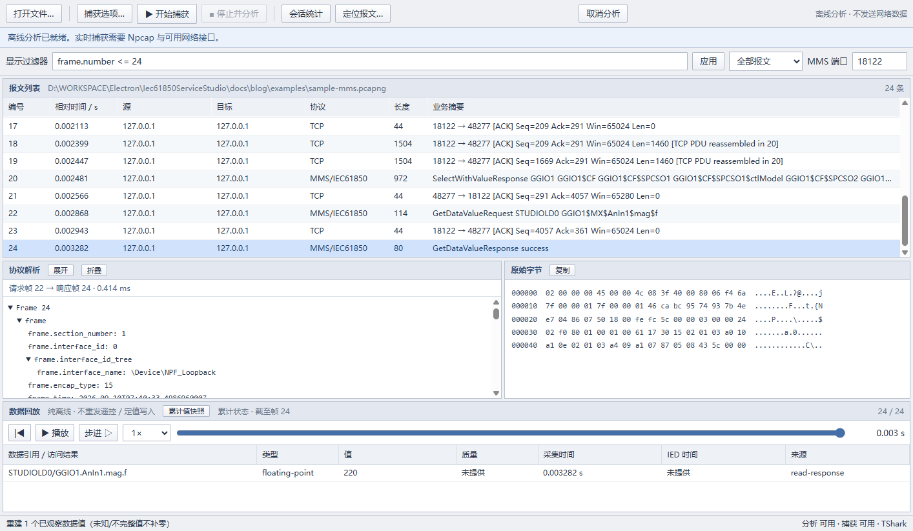
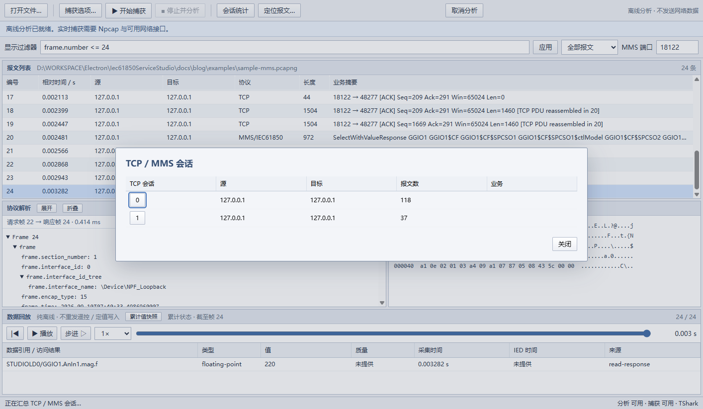
回放分成离线观察和显式注入
离线时间轴计算截至某帧已经观察到的最新值，并不表示完整 IED 状态。抓取开始前的值、丢失报文、未知映射，都不会自动补齐。
将观察值注入 Service Studio 是另一条受控路径：用户配置来源到目标的映射并确认；主进程重新读取来源帧，检查值的完整性、FC 与可回放属性；目标适配器再次检查服务运行、仿真关闭、目标存在且非控制对象，再调用 Update。
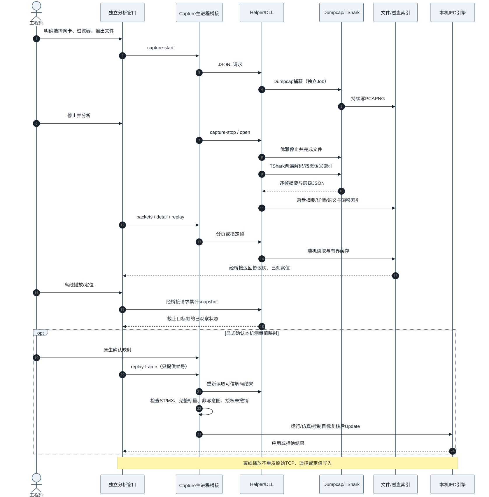
这种回放是语义测量值重放，不是 TCP 字节重放，也不执行捕获到的遥控或 RCB 配置事务。当前通用 Update 的数值通道还是 double，布尔/数值标量以外的完整类型写入需要后续扩展；解析层保留 UINT64 字符串，也不能因此宣称注入层无损支持全部整数。
大文件性能来自边界与索引
分析层对输入文件设置 2 GiB 上限，单记录 32 MiB、单个临时存储 8 GiB；采用磁盘存储和帧偏移索引，而不是把整个 JSON 协议树保存在内存。详细帧缓存限制为 32 帧并受估算内存预算约束。前端分页缓存最多约 4000 行，实际 DOM 只绘制可见窗口。
这些是资源约束，不是 2 GiB 文件可以秒开的性能保证。初始索引、首次访问冷页、重复查看同一帧，具有不同成本。工程诊断应该显示进度并支持取消，后续优化也应分别衡量这些阶段。[16]
七、配套 Client Studio 如何组成真实联调闭环
Service Studio 和 Client Studio 的用途互补：前者提供可控 IED，后者按真实客户端方式观察。本文重新运行了独立客户端，以 mock:false 连接 127.0.0.1:18140，浏览 STUDIO 模型、读取对象和数据集，并启用报告。没有使用客户端的 Mock IED 作为网络证据。
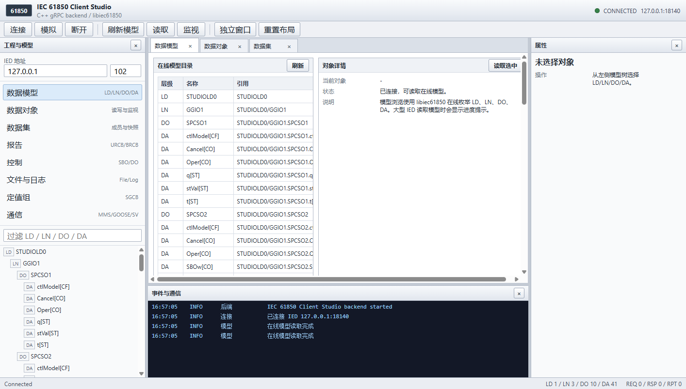
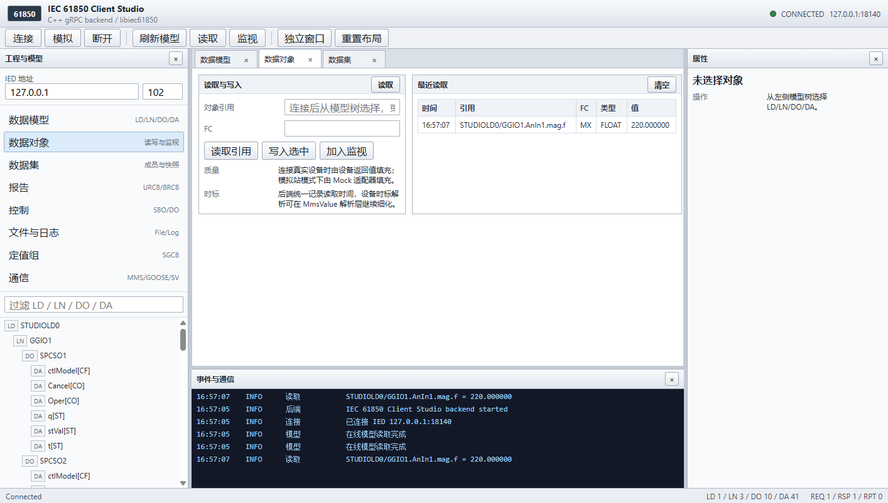
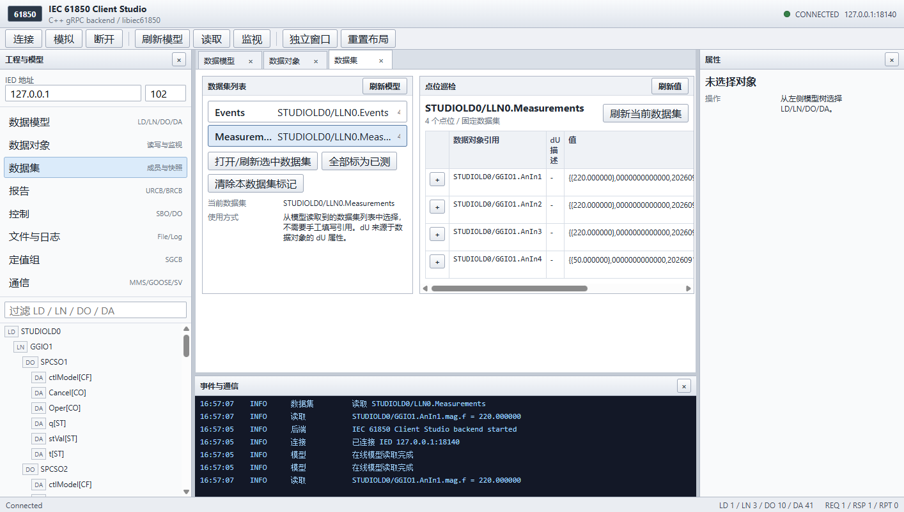
可重复的手动步骤如下：
- Service Studio 使用默认工程，配置本机空闲端口，例如 18140，按 F5 启动。
- Client Studio 选择真实 IED 连接，地址与端口一致；确认不是 Mock。
- 读取
STUDIOLD0/GGIO1.AnIn1.mag.f [MX]，再读取STUDIOLD0/LLN0.Measurements。 - 启用
STUDIOLD0/LLN0.RP.Measurements01并触发 GI。确认服务端存在对应客户端连接和报告事件。 - 服务端修改 AnIn1 为 231.5，客户端重新读取；开启 F6 仿真后观察后续变化。
- 若要抓包，先选 Loopback，设置 MMS 解码端口 18140，再重新建立连接，让捕获包含必要的会话上下文。
这里既有 DO 引用，也有 DA 引用：管理 Update 使用 ...AnIn1，客户端读取具体属性使用 ...AnIn1.mag.f 和 FC。数据集在不同协议 API 中又可能出现点号、美元符号等表示。扩展代码必须使用接口所需的引用格式，不能用字符串替换假定它们完全一致。
八、性能优化：先解释卡在哪里，再谈数字
UI 卡顿至少可能来自三处：大量 DOM 与反复过滤、管理状态重复传输、原生分析或文件操作等待。当前优化包括虚拟树表、结构与值分离读取、限制缓存，以及将重解析隔离到进程。不能把所有改进都归因于 Electron 或 C++ 的语言选择。
| 已记录验证 | 结果 | 能支持的判断与限制 |
|---|---|---|
| 10,000 个合成 DO/点位的 UI 验证 | 初始绘制约 74 ms；100 次选择 15 ms；表格 34 行、树 28 行 DOM | 该脚本和机器上可见区域开销受到控制，不是完整用户交互延迟分布 |
| 100,000 帧、约 108.2 MB UDP 压力文件 | 初始索引 38.83 s；首次中部帧详情 15.39 s | 初次解析与冷访问仍有明显成本；不是 10 万 MMS 报文结果 |
| 同一压力测试分页/缓存 | 分页 p95 4.75 ms；缓存帧 3.62 ms；取消约 26.9 ms | 缓存与取消机制有效，不能替代冷启动结果 |
| helper 工作集 | 约 8.12 MiB | 不包括 TShark 子进程，不能视为整体内存 |
| 小型真实 MMS 测试文件 | 71 个 MMS 帧、8 个事件；seek p95 1.93 ms | 只代表该小型语义回放样例；不同于本文附带的 155 帧文件 |
| 旧便携启动与解压目录启动对照 | 同版 0.2.1：32.369 s 对 1.434 s；0.2.2 ZIP 解压启动 1.518 s | 单机顺序测量，不是跨机器冷启动基准 |
启动对照详见便携版专项记录。[17]
数据出处为项目既有验证记录，本文没有把它们重新包装为竞品对照测试。[18] [15:1]
便携启动的主要改进是发布 ZIP 解压版，避免每次启动都解压大体积依赖。旧自解压包装还涉及临时目录生命周期；这不仅影响速度，也可能影响新窗口加载资源。主窗口和分析窗口现在等待 loadFile 完成，并分别处理加载失败与加载中关闭，防止把窗口取消误报为启动失败。
主进程曾出现 EPIPE 异常，本质是日志写入已经断开的输出管道，尤其在测试启动器与 Electron 生命周期交错时。正确处理应针对输出流和进程清理，不应捕获所有未处理异常后继续假装运行正常。部署体验、诊断和进程所有权也是架构的一部分。
目前尚缺多厂商大模型矩阵、长时间运行、并发客户端与发布混合压力、真实 1 GiB 级 MMS 语义解析、低端硬件体验等证据。文章中的毫秒数字不应外推到这些未测场景。
九、下一步做什么、怎么做、为什么这样安排
规划应优先补足语义与可观测性，再扩大规模，最后讨论严格实时能力。否则，快速回放一个映射错误的值，只会更快地产生错误结果。
| 优先级 / 方向 | 下一步做什么 | 如何实现 | 为什么先做、如何验收 |
|---|---|---|---|
| P0 类型化属性写入 | 从 double 点位通道扩展到明确 DA 类型 | proto 增加带类型的值联合体；校验 FC、位宽、数组和结构；适配原生 MmsValue；UI 按类型编辑 | 避免 64 位整数精度丢失。验收边界值、错误类型拒绝、写后读回与回放一致性 |
| P0 回放可信度 | 分段报告重组、历史数据集版本与缺帧诊断 | 按会话和报告标识维护重组上下文，处理包含位、序号、超时、ConfRev；保留来源帧与不确定性 | 先保证值来自哪里。以真实多厂商捕获和乱序/丢段 fixture 检验，不猜测未知值 |
| P0 工程可迁移 | 工程、banks、凭据引用与分析配置的迁移检查 | 导出带版本清单的工程包；定值显式打包；证书引用重新绑定，私钥策略独立 | 解决工程能打开但定值丢了。验收异机恢复、结构不匹配与中断回滚 |
| P1 状态链路 | 减少不必要的全量 Snapshot 和前端编排耦合 | 引入有版本号的增量更新、背压和重连全量恢复；拆页面控制器，保留结构缓存 | 在正确性基础上降低大模型负载。测端到端 p95 延迟、CPU、丢更新恢复 |
| P1 分析吞吐 | 降低首次索引与冷页等待 | 渐进索引、分页批量读取、可验证指纹缓存；取消时清理任务；按阶段显示进度 | 当前冷访问比缓存慢得多。用相同文件、明确冷/热条件与总子进程内存评估 |
| P1 自动化场景 | 固化导入—启动—订阅—注入—断言流程 | 稳定场景 schema、CLI runner、隔离端口/目录、JUnit/JSON 结果及失败包 | 把人工复现变为持续回归。一个失败用例能在另一台机器重跑 |
| P1 安全与发布治理 | 统一两端管理通道，完善证书和审计生命周期 | 将 Client 固定管理端口迁移为随机认证通道；补证书到期提示、签名与依赖清单 | 降低部署差异。验证无令牌拒绝、异常退出清理、升级回退及日志不含密钥 |
| P2 多 IED 与业务仿真 | 场景驱动多个隔离实例及真实业务状态机 | 先做进程级实例编排与资源预算，再评估共享引擎；物理模型和协议时钟解耦 | 不先把单实例变成共享全局状态。验收地址冲突、实例故障隔离和场景可复现 |
| P2 严格过程总线 | 专用 SV 配置、同步和硬件时序能力 | 明确目标 profile 与单位比例，接入 PTP/硬件时间戳和适用发送硬件，独立验证抖动 | Windows 软件定时无法凭优化承诺确定性。需要外部测量和明确时序指标后才能宣称能力 |
以上是建议路线，不是现有功能清单或已经承诺的交付日期。具体并行程度取决于开发资源；类型契约和回放语义应先稳定，因为 UI、自动化与批量更新都依赖它们。
十、二次开发的价值与可执行指导
适合扩展的业务，而不是重复造协议栈
最有价值的扩展通常贴近企业工作：把企业 SCL 约束变成导入检查；把联调记录变成自动生成的测试证据；按告警/保护业务生成可重复场景；把历史报文中的测量变化映射到试验 IED，检验上位机的新版本。
建议优先复用现有 libiec61850 与 TShark，再在模型规则、事务语义和业务编排层增加能力。只有发现并能复现底层协议缺陷时，才修改底层库，并为其维护独立回归样例。
准备开发环境并跑通最小链路
Windows 构建依赖 Node.js、Visual Studio 2022 C++ 工具链、CMake/Ninja，以及包含 gRPC、Protobuf 的 vcpkg。构建脚本默认寻找同级工具目录，可通过 VCPKG_ROOT、VSDEVCMD 指定位置。SCL 转换另外需要 Java 17+；读取现有 CFG 不需要 Java。捕获模块使用独立构建脚本，实时网卡能力还依赖 Npcap。
在项目根目录执行：
npm install
npm run build:backend
npm run check
npm test
npm run test:integration
npm start
需要分析模块时增加：
npm run build:capture
npm run test:capture
npm run test:capture-ui
npm run test:replay
网络发布、安全和定值专项分别使用 npm run test:publishers、npm run test:security、npm run test:no-settings。发布测试会实际操作网卡，应在明确的实验环境执行。测试通过的范围以各脚本断言为准，不等于协议一致性认证。
示例 A：用现有内部接口创建一个自动化场景
附带 scenario.js 会启动自己的原生引擎，在 Loopback 的 18142 端口建立默认 IED，依次写入 220、231.5、0，并读取 Snapshot 断言结果。它使用现有 createReplayTarget 的目标检查，最后关闭自己创建的进程。
node docs/blog/examples/scenario.js
本次运行输出：
{"reference":"STUDIOLD0/GGIO1.AnIn1","value":220,"verified":true}
{"reference":"STUDIOLD0/GGIO1.AnIn1","value":231.5,"verified":true}
{"reference":"STUDIOLD0/GGIO1.AnIn1","value":0,"verified":true}
核心调用链如下，完整错误处理与清理在附件中：
await backend.start();
await backend.call('Apply', project);
await backend.call('Start');
await target.apply({ reference: 'STUDIOLD0/GGIO1.AnIn1', value: 231.5, quality: 0 });
const state = await backend.call('Snapshot');
这验证管理接口到原生运行模型，不包含独立 MMS 读回；若要端到端断言，应像 scripts/integration.js 一样增加原生客户端读取或配套 Client 调用。内部 Backend 类目前不是承诺兼容的公共 SDK，升级时应固定版本并运行自己的回归用例。
如果解压的是文章独立资料包，先把 STUDIO_ROOT 指向已构建的 Service Studio 源码根目录，再运行 examples/scenario.js。端口冲突时设置 STUDIO_MMS_PORT，不要停止其他用户的进程。
示例 B：将 PCAPNG 导出为可解释的观察值快照
附带 export-observations.js 和 sample-mms.pcapng。样例文件来自本机集成测试通信，不包含用户提供的现场 capture.pcapng。
node docs/blog/examples/export-observations.js `
docs/blog/examples/sample-mms.pcapng `
observations.json 18122
本次验证得到 155 帧、10 个完整且可回放的观察值。脚本保留解析器返回的类型、来源和品质元信息，不把 UINT64 字符串强制转换为 JavaScript Number；输出文件以 wx 模式创建，已有同名文件会报错，避免覆盖先前证据。
该导出是捕获结束时最新观察状态，不是每次变化的完整事件序列。要做事件数据集，应改为按 replay 事件分页读取并保留每个来源帧和相对时间；不能对快照简单补时间戳后称为历史曲线。
新增一个原生能力时，应该改哪些地方
以未来的类型化 DA 写入为例，建议按契约向两端展开：
- 在
proto/service.proto定义独立请求和值类型，明确引用、FC、预期类型、错误结构与响应语义。不要把现有 double 的含义偷偷扩展。 - 在
grpc_service.h增加适配，业务校验放进引擎操作层；核对目标存在、类型和访问限制，再以协议库 API 更新，正确处理品质和时间。 - 在主进程增加窄命令，在 preload 暴露限定调用；参数和调用来源都要验证，不能把整个 gRPC 客户端交给 renderer。
- 在对象属性弹窗增加对应类型编辑器，明确只读、拒绝和写入成功后的刷新行为。结构树由 model_browser 提供，UI 不自行推断底层类型。
- 测试至少覆盖合法写入、越界整数、错误 FC、数组长度、已停止服务、控制对象拒绝和独立 MMS 读回。对持久化字段再增加重启恢复测试。
相同原则适用于新增发布参数：先定义配置与默认值，再补验证、原生生命周期、UI 和线缆上的报文检查。只有配置界面出现新字段，并不表示功能已经完成。
扩展分析 DLL 时保持边界稳定
先阅读 backend/capture/README.md 和公开 C 头文件，再按照既有 JSON 请求响应模型增加命令。新命令需要请求 ID 关联、结构化失败和取消语义；异步任务不得在 destroy 后回调已释放上下文。
协议字段扩展优先保留“原始证据 → 解析字段 → 语义值 → 来源帧”链路。新增映射算法要有未知、部分和冲突状态；不要为了让表格更完整而构造不存在的引用。对实时捕获，先验证停止会正常刷新文件，再验证强制终止的恢复路径。
DLL ABI 改动应升版本并保留兼容策略；使用库返回的字符串应遵守其生命周期，不能跨模块自行 free。新增必需依赖前，仍需通过分析模块缺失时主应用可用的测试。
许可证与维护成本也是二次开发的一部分
Service Studio 包声明 GPL-3.0-or-later，libiec61850 官方开源版本采用 GPLv3，并提供商业许可路径。集成 Wireshark 相关组件、驱动和第三方依赖还需要分别审查其分发条件。配套 Client README 中的许可表述，不能覆盖底层库的许可要求。[6:1]
源码可改的价值，在于能维护自己的工程需求；代价则是需要维护版本固定、回归样例、依赖升级和发行资料。计划闭源商业分发时，应先确定完整依赖和授权路径，再设计交付方式，不能把本地使用成功当作已经解决授权问题。
十一、如何阅读本文证据，以及项目的当前边界
本文包含 19 张实际运行截图和 5 张源码对应图：一张系统架构图、一张数据链路图、三张时序图。主窗口和配套客户端截图来自本次真实运行；发布与 TLS 图展示实际配置界面，没有把禁用流或未执行的握手当作成功证据。抓包截图来自真实测试 PCAPNG。截图用于证明界面和当时状态，协议正确性还应结合集成测试与原始报文。
图片文件、可编辑 Mermaid 源文件、两个已运行的 Node.js 示例和小型 PCAPNG 均随文提供。离线 HTML 无 CDN 依赖，可以直接打开；Markdown 适合继续编辑和发布。文章资料包不包含用户现场抓包、私钥或完整开发环境。
当前项目已经形成从模型到真实 MMS、从运行到报文观察的工程闭环。下一阶段的关键是把类型精度、报告上下文、迁移恢复、自动化验证和性能证据做得更扎实。只有这些边界被明确实现和验证，桌面工具才能从能用一次逐步成为团队长期依赖的联调平台。
参考资料与源码入口
以下互联网资料访问于 2026-09-10。功能对照以官方公开说明为依据；本项目的实现判断以所列源码与验证记录为依据。本文没有进行竞品性能、价格或一致性认证的独立测评。
OMICRON，IEDScout 官方功能介绍。 ↩︎
Triangle MicroWorks，61850 Test Suite Pro Advanced Client。 ↩︎
Grid Software，gooseAir 产品介绍。 ↩︎
MZ Automation，libiec61850 官方仓库与许可证说明。 ↩︎ ↩︎
Wireshark，TShark 官方手册。 ↩︎ ↩︎
Triangle MicroWorks，Test Suite Pro FAQ，用于核对 Hammer / Anvil 与当前产品名称的对应。 ↩︎
Grid Software，TERA / ETAR Windows Modules。 ↩︎
本地资料：捕获模块接口与构建、捕获需求、回放目标校验、捕获 helper 桥接。 ↩︎
本地文档：便携版启动测量及方法。 ↩︎